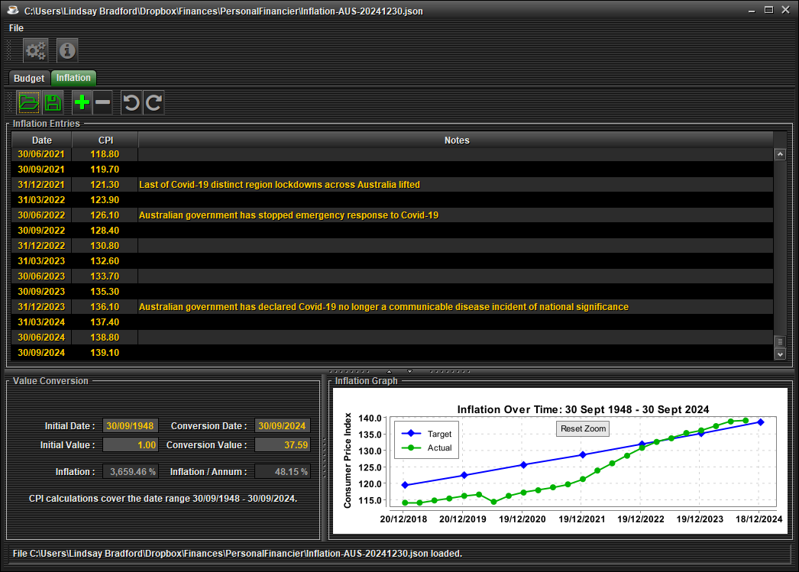
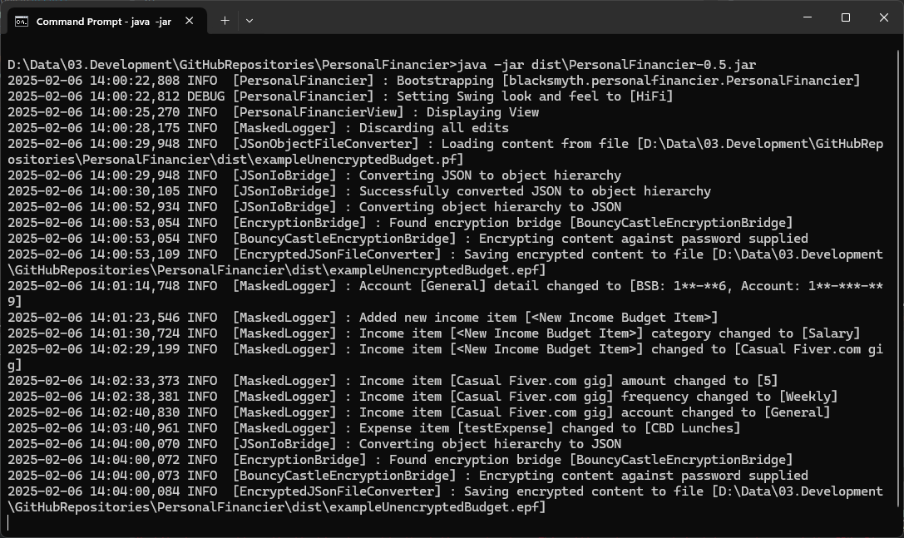

Understanding your personal finances with ease.
The aim of this project is to create a free yet powerful household budgetting tool. A zip-file of the executable jar, along with example save files, logging configuration and a compatible cryptography library is supplied above. It should contain everything you need to get going once you've installed a Java 23 runtime environment.
Let's explore the various features of the tool in the sections below:
The core purpose of PersonalFinancier is household budgeting, available via the Budget tab. The following functionality is offered:
Budget save data is by default unencrypted Json data, readable via any text editor. However, as budget data can hold sensitive information, you can optionally supply the PersonalFinancier access to the Bouncy Castle cryptography library, which will allow AES-256 encrypted, password protected save files.
The default file extension for PersonalFinancier budget files is .pf. If the crypto library is supplied in the same directory as PersonalFinancier,
specifying a file extension of .epf will prompt the user for a password, and use it to encrypt the budget data saved.
Please note that there is nothing I can do for you if you forget your password. AES-256 doesn't store the password, or anything remotely like it, so you're just plumb out of luck if you really want that data back but can't remember the password used to encrypt it. Caveat Emptor!
The PersonalFinancier comes with an Inflation component, allowing you to load inflation data from a json file, or create your own. It charts the inflation against a target, and supplies a conversion utility pane that allows you to convert a monetary value at one date to its equivlent value at a different date.
By supplying an optional log4j configuration file in the same directory as the Personal Financier jar, you'll be able to log usage of the PersonalFinancier as you please. With the budgeting component, some data, such as bank account, BSB, and credit-card numbers, is considered sensitive. PersonalFinancier will mask all sensitive data before it is logged.
{kind=link}
{kind=link}
{kind=link}